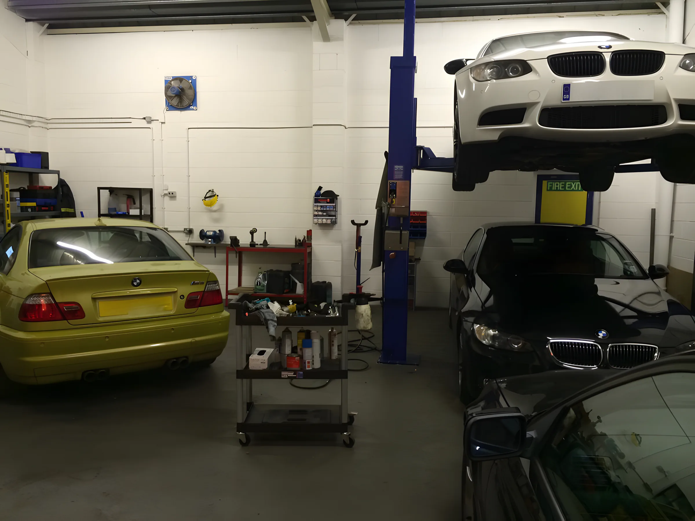
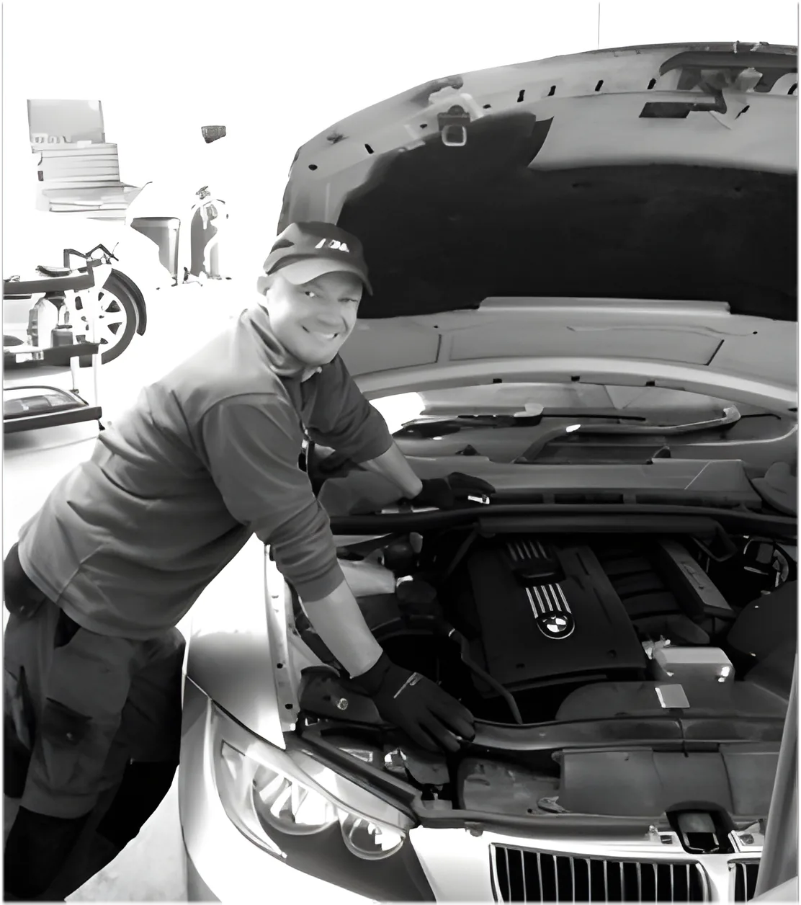
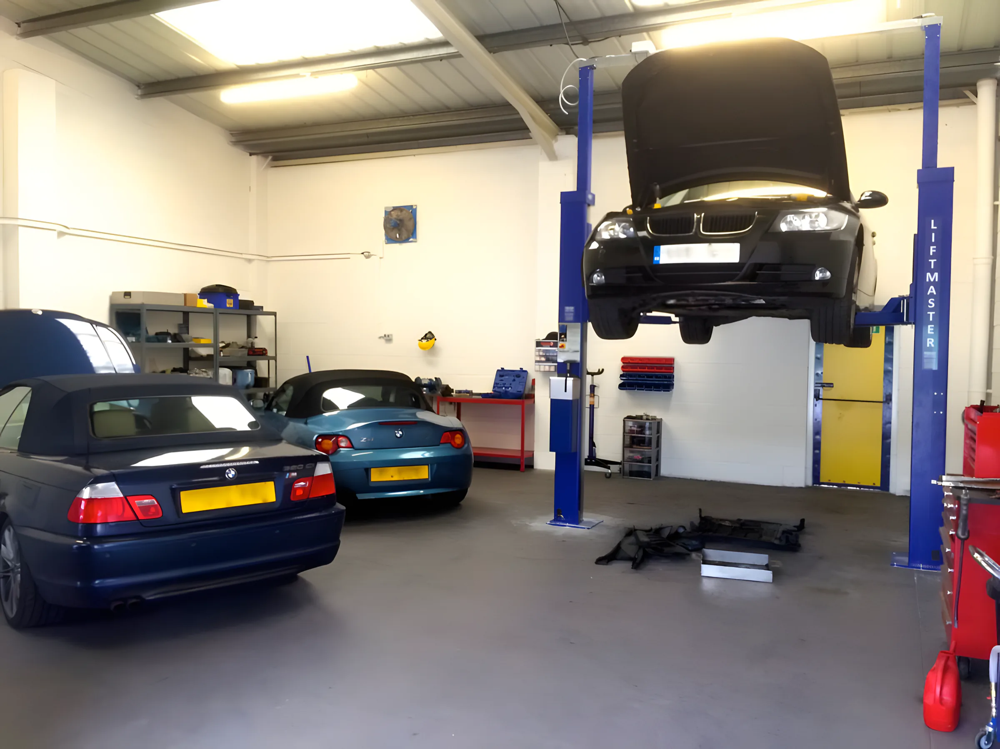
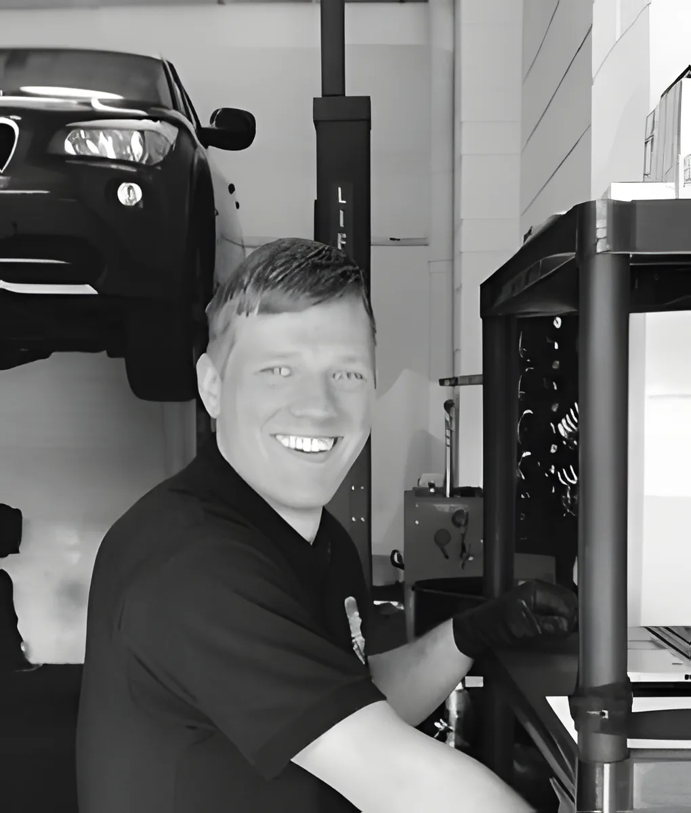
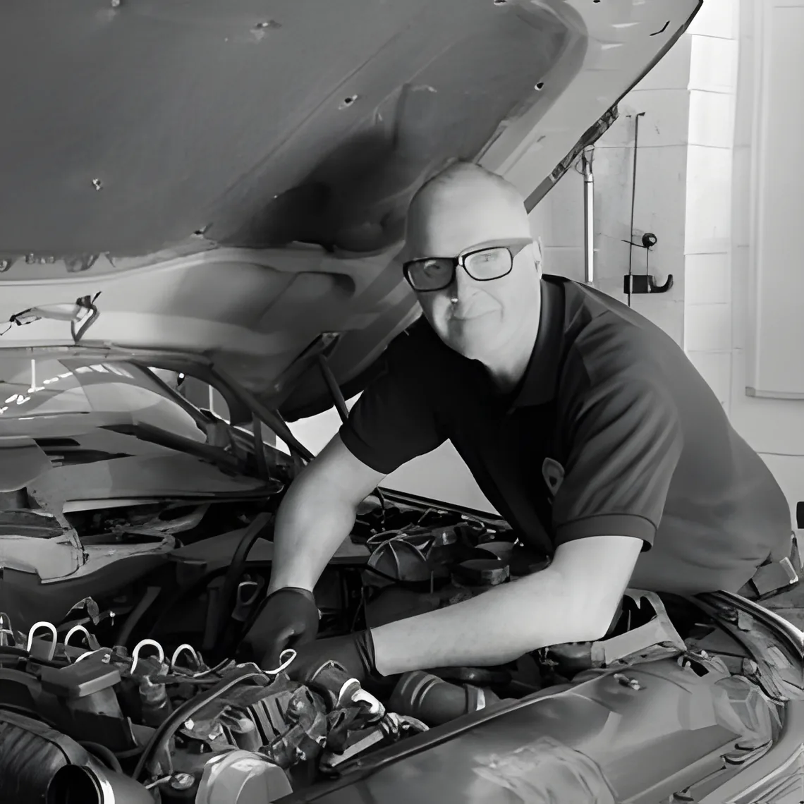
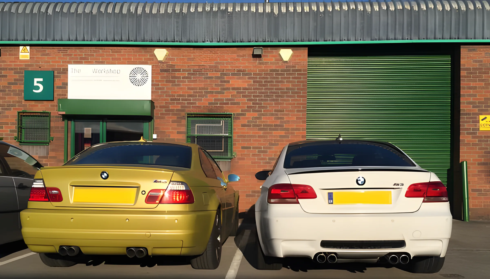
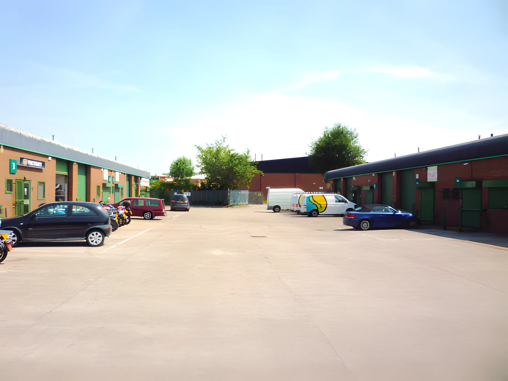

Professional
More than twenty years in BMW dealerships in South Africa, London and Leeds. Qualified and accredited as a Senior BMW Technician by the BMW Institute of Excellence. Dealer-level diagnostic software, quality OEM parts and approved oils.

Independent BMW specialist. Servicing, diagnostics and repairs led by a Senior BMW Technician with more than twenty years in the BMW dealer network. Fair prices, and none of the dealer attitude.
Call 0113 249 704701The Workshop
“Do you find their approach to customer service and their prices frustrating? As an alternative I offer a professional, personalised and competitively priced service. My customers know that I'm always happy to discuss any issues they're having with their vehicle.”
We use dealer-level BMW diagnostic software, genuine BMW or OEM parts with the trade discount passed on, and BMW approved oils. Every service is logged on the BMW database and written to your car's electronic service book.

Anthony Rouse, Senior BMW Technician and ownerThree words Anthony has put at the top of his page since day one. This is what they mean when your car is in the bay.
More than twenty years in BMW dealerships in South Africa, London and Leeds. Qualified and accredited as a Senior BMW Technician by the BMW Institute of Excellence. Dealer-level diagnostic software, quality OEM parts and approved oils.
We work in an open, honest and transparent way and take the time to explain everything. We will never tell you something needs doing if it doesn't, and we'll always talk through the most cost-effective way to keep your BMW in top condition.
A small team in our own unit just north of the city centre, trading as an independent BMW specialist for over ten years. You talk to the people who work on your car, not a service desk.
Whatever BMW you drive, it deserves to be looked after properly. Tap a line for the detail, or see the full services page.




years inside the BMW dealer network before going independent: Johannesburg, Cape Town, London, then Scotthall BMW in Leeds.
on Google from 135 reviews. Our customers regularly recommend us to their friends, family and colleagues.
years trading as an independent BMW specialist in Leeds, from Unit 5, Haines Park.
Cars our customers mention in their reviews
From the letters on our testimonials page. 4.9 ★ from 135 reviews on Google · read them all
Owning an old M5 can be a daunting proposition… He is as obsessive about the cars he works on as his customers are and won't rest until he finds the source of a mystery rattle!
My usual garage were talking a new head gasket and massive cost. Obviously your BMW expertise was the key.
The Workshop has always provided a clear explanation of the problem and I have never received a surprise when the bill arrived.
A trustworthy and caring, excellent mechanic who sorted out the car in a matter of days, from recovery truck to a very happy daughter.
My ageing 3 series diesel has never run better, and that's with 175k miles on the clock now!
Three BMW technicians who have worked together before. At a big garage you have no idea who is working on your car. Here you can ask for any of us by name.
Owner · Senior BMW Technician
BMW apprenticeship in Johannesburg, qualified in Cape Town, Senior Technician in the UK.
Workshop manager
Fully qualified technician, with us since 2017. Particularly strong on diagnostics.
BMW technician
A proud Kiwi, in Leeds for more than twenty years. Gets even the smallest details right.
The Workshop Leeds Ltd, Unit 5, Haines Park, Grant Avenue, Leeds LS7 1QQ
Just north of the city centre, in Haines Park, a small, secure industrial estate. Opposite Jewson and behind Wilko Motosave. Look for the green door and the number 5.
| Monday | 08:00 – 17:00 |
| Tuesday | 08:00 – 17:00 |
| Wednesday | 08:00 – 17:00 |
| Thursday | 08:00 – 17:00 |
| Friday | 08:00 – 17:00 |
| Saturday | Closed |
| Sunday | Closed |
